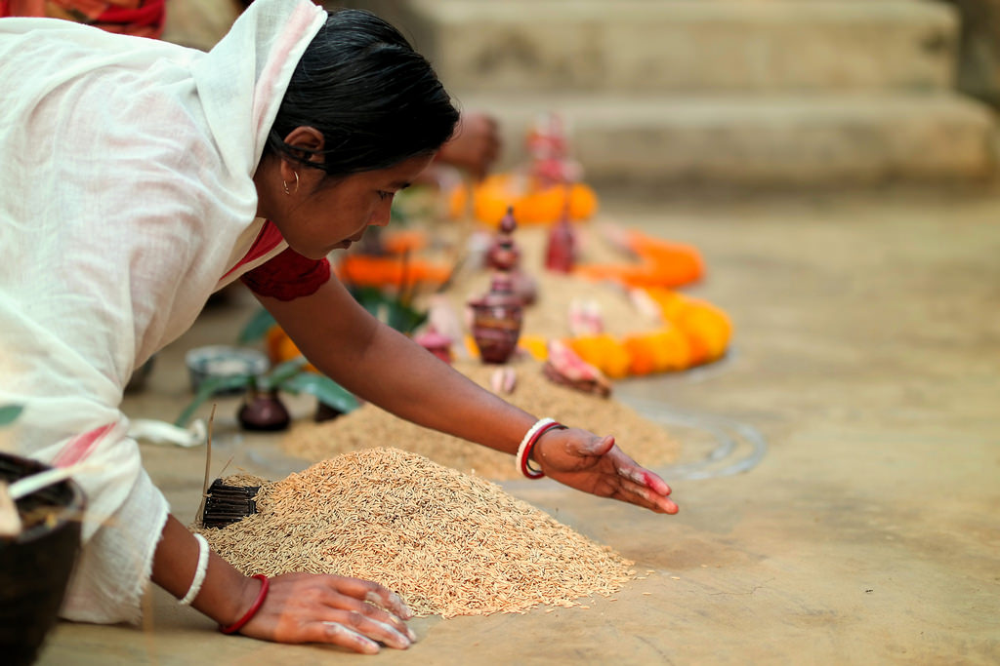
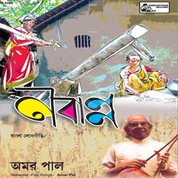
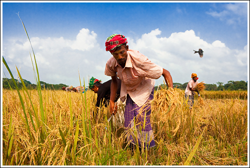

Nabanna /Nuakhai Festival is celebrated on panchami tithi (5th day) of the lunar fortnight of the month of Bhadrapada or Bhaadra (August–SeptemberMajor Territory of Celebration Nabanna /Nuakhai Festival is celebrated people of Western Orissa (Kosal) in India About Festival Nabanna is also known as Nuakhai is an agricultural festival This is also called the Nuakhai Parab or Nuakahi Vetghat. The word Nuakhai = nua + khai , Nau mean new and khai means food.So farmers are celebrate this festival in possession of the newly harvested rice.Nuakhai festival is celebrated at a particular time of day that is called lagan. Every home is cook a arsa pitha (a food made with rice), a popular dish in the western part of Orissa. When the lagan comes, the people first remember their village god or goddess and then have their nua.In this festival people worship of food grain. Main celebration of this festival in Kalahandi, Bargarh, Sundargarh, Sambalpur, Balangir ,Sonepur, Boudh and Nuapada districts of Western Orissa.
|  |  |  |